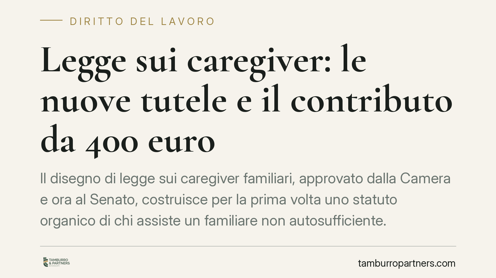

Legge sui caregiver: le nuove tutele e il contributo da 400 euro
Il disegno di legge sui caregiver familiari, approvato dalla Camera e ora al Senato, costruisce per la prima volta uno statuto organico di chi assiste un familiare non autosufficiente. Introduce quattro profili, nuove tutele sul lavoro e un contributo economico fino a 400 euro al mese dal 2027, ma riservato a una platea ristretta. Vediamo cosa cambia davvero.

Il contesto
In Italia chi assiste un familiare disabile o non autosufficiente ha finora operato in un quadro frammentario, fatto di singoli permessi e agevolazioni sparsi in più norme. Il ddl AS 2063, licenziato dalla Camera e all'esame del Senato (dato aggiornato al 14 ottobre 2026), prova a dare al "caregiver familiare" una definizione giuridica unitaria e un sistema di tutele dedicato.
È un passaggio rilevante perché incrocia due materie: il diritto del lavoro, con nuovi strumenti di conciliazione tra assistenza e attività professionale, e il diritto di famiglia, perché riconosce un ruolo di cura che ricade quasi sempre su coniugi, figli o genitori.
Inquadramento normativo
Il testo individua quattro profili di caregiver, graduati in base all'intensità e alla continuità dell'assistenza prestata. La distinzione non è teorica: da essa dipende l'accesso alle misure, a partire dal contributo economico.
Sul fronte lavorativo, il ddl si innesta sulla disciplina già esistente. Richiama in particolare l'art. 24 del d.lgs. 151/2015, in tema di congedi e permessi per l'assistenza, e si collega al Fondo per il sostegno del ruolo di cura e assistenza del caregiver familiare, istituito dall'art. 1, comma 255, della legge 205/2017 (legge di bilancio 2018), finora rimasto in larga parte inattuato.
L'art. 14 del provvedimento disciplina il contributo economico: fino a 400 euro mensili, a decorrere dal 2027. Qui sta il punto più discusso. La misura non è universale. È riservata al caregiver cosiddetto "prevalente", cioè chi presta assistenza in via principale, a condizione che sia convivente con la persona assistita e che non svolga attività lavorativa. Tre requisiti cumulativi che restringono sensibilmente la platea dei beneficiari.
Implicazioni pratiche
Per chi assiste un familiare, le novità si muovono su due piani.
Sul piano del lavoro, il riconoscimento formale della figura rafforza la posizione del lavoratore-caregiver nei confronti del datore, in termini di accesso ai permessi, priorità nelle richieste di lavoro flessibile e tutela contro trattamenti discriminatori legati all'attività di cura. Sono presidi che, una volta in vigore, potranno essere fatti valere anche in sede contenziosa.
Sul piano economico, il quadro è più selettivo. Il contributo da 400 euro non spetta a chi lavora, neppure part-time, né a chi assiste un familiare pur non convivendo con lui. Molti caregiver reali — ad esempio il figlio che assiste un genitore mantenendo il proprio impiego — resteranno fuori dal beneficio diretto, pur potendo accedere alle tutele lavorative.
Va inoltre tenuto presente che il testo è ancora in discussione al Senato. Profili, requisiti e importi possono subire modifiche prima dell'approvazione definitiva e dei successivi decreti attuativi, che definiranno le procedure di erogazione, presumibilmente tramite INPS.
Cosa fare in concreto
- Verificate il profilo di appartenenza. Individuate in quale dei quattro profili ricade la vostra situazione: da questo dipende l'accesso alle diverse misure.
- Controllate i tre requisiti del contributo. Prevalenza dell'assistenza, convivenza con la persona assistita e assenza di attività lavorativa devono sussistere insieme. Verificateli con attenzione prima di fare affidamento sul beneficio.
- Mappate i permessi già oggi disponibili. Nell'attesa dell'entrata in vigore, consigliamo di valutare i congedi e i permessi già previsti dalla normativa vigente, che restano pienamente operativi.
- Documentate l'attività di cura. Conservate certificazioni sanitarie, verbali di invalidità e ogni elemento utile a dimostrare continuità e intensità dell'assistenza, in vista delle future istanze.
- Monitorate l'iter al Senato. Il testo non è definitivo. Consigliamo di seguire le modifiche e di attendere i decreti attuativi prima di assumere decisioni, ad esempio in merito alla propria posizione lavorativa.
---
*Contributo informativo a cura di Tamburro & Partners - Avv. Giuseppe Tamburro. Non costituisce parere legale.*
Ogni storia di lavoro ha i suoi tempi.
Se gestisci HR e vuoi un confronto su contenzioso, ispezioni o licenziamenti, scrivi allo studio. Ti rispondiamo entro un giorno lavorativo.